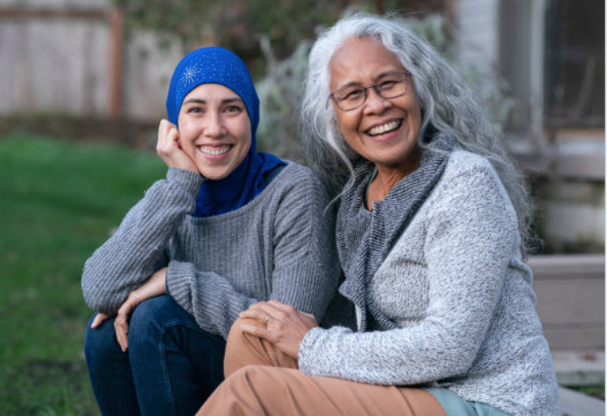
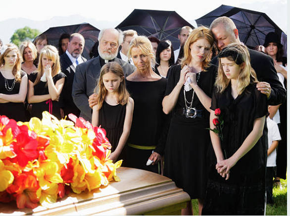

Welcome to the practice, where optimal mental health is recognized as an essential journey. The approach to mental health services is inspired by the African concept of "Mzuri" which emphasizes focusing on the positives in life. The fundamental principle of this belief is that accessing your inner state of well-being is crucial for a fulfilling life. The practice hopes to support you on your journey towards reaching Mzuri, unlocking your full potential, and promote healing.
Depression
Trauma & PTSD

Substance Use
BIPOC Mental health

Cultural Identity
Intergenerational Trauma

Grief, Loss, & Bereavement
PostPartum